Question 1 [2 + 2]
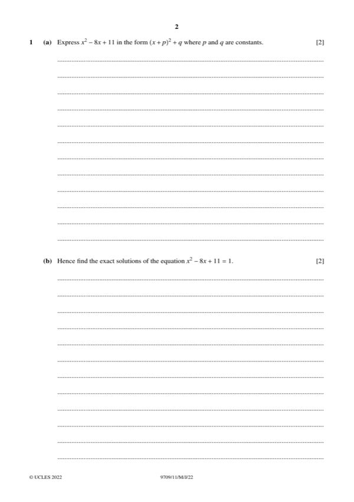
Original paper page 2
(a) [2] Express x² − 8x + 11 in the form (x + p)² + q.
x² − 8x + 11 = (x − 4)² − 16 + 11 = (x − 4)² − 5
p = −4, q = −5
(b) [2] Hence find the exact solutions of x² − 8x + 11 = 1.
(x − 4)² − 5 = 1 so (x − 4)² = 6 so x = 4 ± √6
x = 4 + √6 or x = 4 − √6
Question 2 [5]
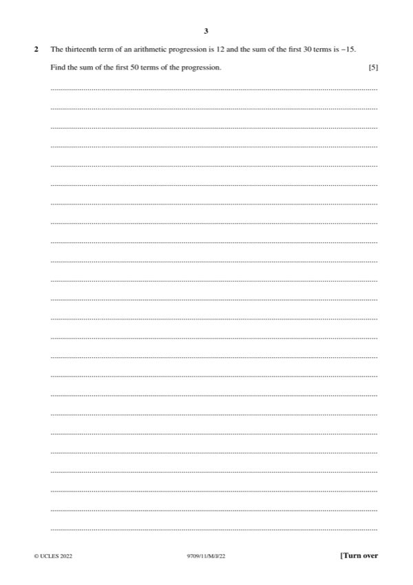
Original paper page 3
The 13th term of an AP is 12 and the sum of the first 30 terms is −15. Find the sum of the first 50 terms.
a + 12d = 12
S₃₀ = 15(2a + 29d) = −15 so 2a + 29d = −1
a = 12 − 12d, so 24 − 24d + 29d = −1 so d = −5, a = 72
S₅₀ = 25(2(72) + 49(−5)) = 25(−101)
S₅₀ = −2525
Question 3 [3 + 3]
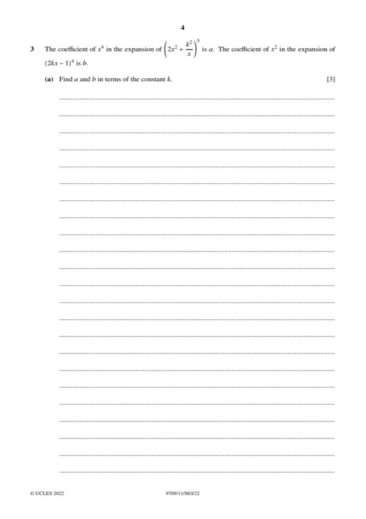
Original paper page 4
(a) [3] The coefficient of x⁴ in (2x² + k²/x)⁵ is a. The coefficient of x² in (2kx − 1)⁴ is b. Find a and b in terms of k.
Term in (2x² + k²/x)⁵ with x⁴: C(5, 2)(2x²)³(k²/x)² = 10 · 8 · k⁴ x⁴
Term in (2kx − 1)⁴ with x²: C(4, 2)(2kx)²(−1)² = 6 · 4k² x² = 24k² x²
a = 80k⁴, b = 24k²
(b) [3] Given a + b = 216, find the possible values of k.
80k⁴ + 24k² = 216 so 10k⁴ + 3k² − 27 = 0 so (2k² − 3)(5k² + 9) = 0
k = ±√(3/2) ≈ ±1.22
Question 4 [4 + 2]
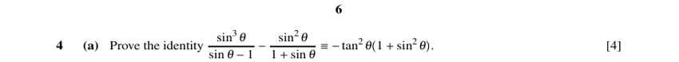
Original paper page 6
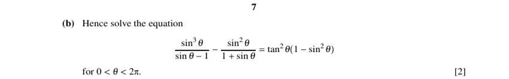
Original paper page 7
(a) [4] Prove the identity sin³θ/(sin θ − 1) − sin²θ/(1 + sin θ) ≡ −tan²θ(1 + sin²θ).
Common denominator (sin θ − 1)(sin θ + 1):
sin³θ(1 + sin θ) − sin²θ(sin θ − 1) = sin⁴θ + sin²θ
LHS = (sin⁴θ + sin²θ)/(sin²θ − 1) = sin²θ(1 + sin²θ)/(−cos²θ)
= −tan²θ(1 + sin²θ)
(b) [2] Hence solve the equation (same LHS) = tan²θ(1 − sin²θ) for 0 < θ < 2π.
−tan²θ(1 + sin²θ) = tan²θ(1 − sin²θ)
tan²θ(−1 − sin²θ − 1 + sin²θ) = 0 so −2tan²θ = 0 so tan θ = 0
θ = π
Question 5 [3 + 4]
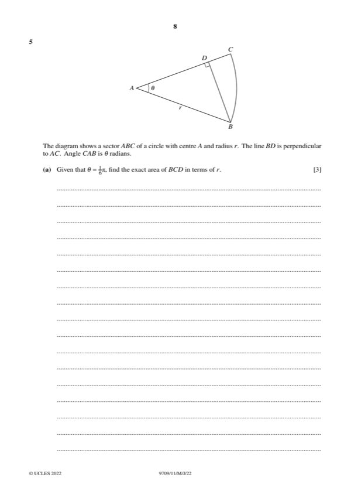
Original paper page 8
(a) [3] Sector ABC of radius r, centre A, angle θ = π/6. BD ⊥ AC. Find the exact area of BCD in terms of r.
Sector area = ½r²(π/6) = πr²/12
BD = r sin(π/6) = r/2, AD = r cos(π/6) = √3r/2
Triangle ABD = ½ · (√3r/2) · (r/2) = √3r²/8
Area BCD = sector − triangle ABD = πr²/12 − √3r²/8
Area = (2π − 3√3)r²/24
(b) [4] Given instead that BD = (√3/2) r, find the exact perimeter of BCD in terms of r.
sin θ = BD/r = √3/2 so θ = π/3
AD = r cos(π/3) = r/2, so DC = r − r/2 = r/2
Arc BC = rθ = πr/3, BD = √3r/2
Perimeter = (√3/2)r + r/2 + πr/3 = r(√3 + 1)/2 + πr/3
Question 6 [3 + 4 + 1]
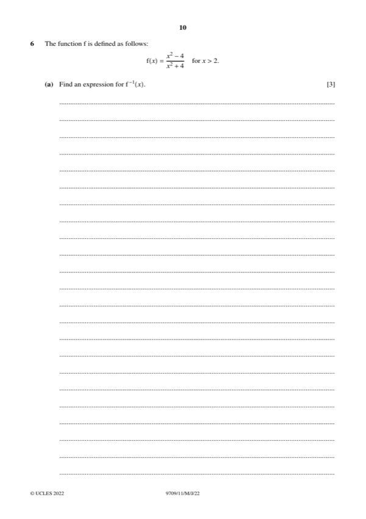
Original paper page 10
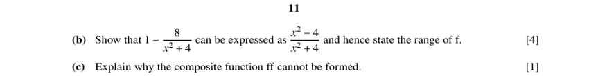
Original paper page 11
(a) [3] f(x) = (x² − 4)/(x² + 4) for x > 2. Find f⁻¹(x).
y(x² + 4) = x² − 4 so x²(y − 1) = −4(1 + y) so x² = 4(1 + y)/(1 − y)
x > 2 so x is positive
f⁻¹(x) = 2√((1 + x)/(1 − x))
(b) [4] Show that f(x) = 1 − 8/(x² + 4), and hence state the range of f.
(x² − 4)/(x² + 4) = 1 − 8/(x² + 4)
x > 2 gives x² + 4 > 8, so 0 < 8/(x² + 4) < 1
Range: 0 < f(x) < 1
(c) [1] Explain why the composite function ff cannot be formed.
Range of f is 0 < f(x) < 1, which is not inside the domain x > 2.
The range of f is not within the domain of f, so ff is undefined.
Question 7 [4 + 5]
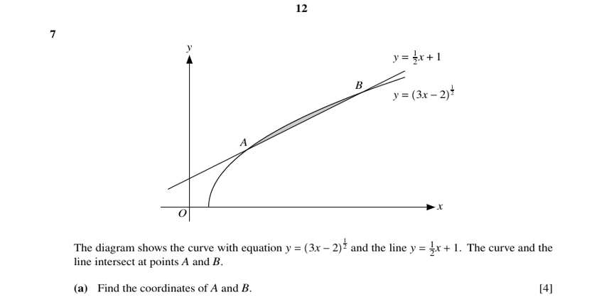
Original paper page 12
(a) [4] The curve y = (3x − 2)^½ and the line y = ½x + 1 intersect at A and B. Find the coordinates of A and B.
(3x − 2)^½ = ½x + 1 so 3x − 2 = ¼x² + x + 1
x² − 8x + 12 = 0 so (x − 2)(x − 6) = 0
A(2, 2), B(6, 4)
(b) [5] Hence find the area of the region enclosed between the curve and the line.
Area = ∫₂⁶ [(½x + 1) − (3x − 2)^½] dx
∫₂⁶ (½x + 1) dx = 12
∫₂⁶ (3x − 2)^½ dx = (2/9)[(3x − 2)^{3/2}]₂⁶ = (2/9)(64 − 8) = 112/9
Area = 112/9 − 12 = 4/9 ≈ 0.444
Question 8 [5 + 3]
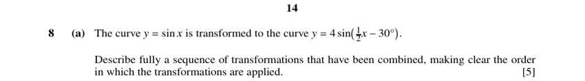
Original paper page 14
(a) [5] The curve y = sin x is transformed to y = 4 sin(½x − 30°). Describe fully a sequence of transformations, in order.
sin x → stretch in x-direction, factor 2 → sin(½x)
→ translation by 60° in the positive x-direction → sin(½(x − 60°)) = sin(½x − 30°)
→ stretch in y-direction, factor 4 → 4 sin(½x − 30°)
Stretch (x-direction, ×2); translate 60° right; stretch (y-direction, ×4)
(b) [3] Find the exact solutions of 4 sin(½x − 30°) = 2√2 for 0° ≤ x ≤ 360°.
sin(½x − 30°) = √2/2 so ½x − 30° = 45° or 135°
½x = 75° or 165°
x = 150°, x = 330°
Question 9 [4 + 6]
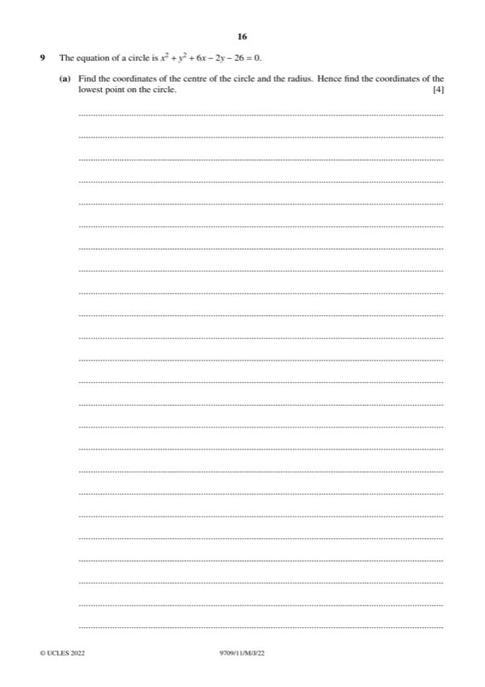
Original paper page 16
(a) [4] The circle is x² + y² + 6x − 2y − 26 = 0. Find the centre and radius, and the coordinates of the lowest point.
(x + 3)² + (y − 1)² = 26 + 9 + 1 = 36
Centre (−3, 1), radius 6
Lowest point = (−3, 1 − 6)
Centre (−3, 1), radius 6; lowest point (−3, −5)
(b) [6] Find the set of k for which y = kx − 5 meets the circle at two distinct points.
x² + (kx − 5)² + 6x − 2(kx − 5) − 26 = 0
(1 + k²)x² + (6 − 12k)x + 9 = 0
Discriminant > 0: (6 − 12k)² − 36(1 + k²) > 0 so 108k² − 144k > 0 so 36k(3k − 4) > 0
k < 0 or k > 4/3
Question 10 [1 + 5 + 3 + 3]
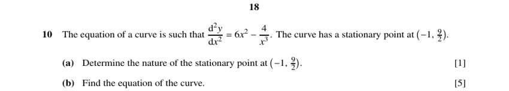
Original paper page 18
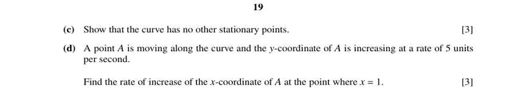
Original paper page 19
(a) [1] Determine the nature of the stationary point at (−1, 9/2), given d²y/dx² = 6x² − 4/x³.
At x = −1: d²y/dx² = 6 + 4 = 10 > 0
Minimum point
(b) [5] Find the equation of the curve.
dy/dx = ∫(6x² − 4x⁻³) dx = 2x³ + 2x⁻² + C
At (−1, ·) dy/dx = 0: −2 + 2 + C = 0 so C = 0, so dy/dx = 2x³ + 2/x²
y = x⁴/2 − 2/x + D
Through (−1, 9/2): ½ + 2 + D = 9/2 so D = 2
y = x⁴/2 − 2/x + 2
(c) [3] Show that the curve has no other stationary points.
dy/dx = 0: 2x³ + 2/x² = 0 so x⁵ = −1 so x = −1 (the only real solution)
Only one stationary point, at x = −1.
(d) [3] A point A moves along the curve with dy/dt = 5. Find dx/dt when x = 1.
dy/dx at x = 1: 2 + 2 = 4
dx/dt = (dy/dt)/(dy/dx) = 5/4
dx/dt = 1.25 units per second